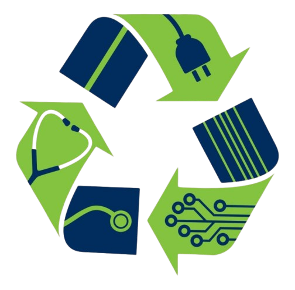

|  | Implications of e-waste |

Overview
Every year millions of electrical and electronic devices are discarded as products break or become obsolete and are thrown away. These discarded devices are considered e-waste and can become a threat to the environment and to human health if they are not treated, disposed of, and recycled appropriately. Common items in e-waste streams include computers, mobile phones, and large household appliances, as well as medical equipment. Every year, millions of tonnes of e-waste are recycled using environmentally unsound techniques and are likely stored in homes and warehouses, dumped, exported or recycled under inferior conditions.
Harmful Effects of E-waste
The consequences of improper e-waste disposal in landfills or other non-dumping sites pose serious threats to current public health and can pollute ecosystems for generations to come. When electronics are improperly disposed and end up in landfills, toxic chemicals are released, impacting the earth’s air, soil, water and ultimately, human health.
- Soil Pollution: All electronic waste contains heavy and harmful metals such as mercury, lead, and arsenic. If this electronic waste is decomposed or disposed of into the soil it can contaminate and degrade the soil, affect adversely plant lifecycle and growth, reduce crop yield, and contaminate the food produced by the plants.
- Water Pollution: The toxic elements that are present in electronic devices can contaminate the water. This can adversely affect aquatic life and water resources, human life can be in danger if such contaminated water is used for drinking and cooking purposes.
- Air Pollution: Many harmful gases are released into the air during the disposal of electronic waste and recycling it. These harmful gases that are released increase air pollution and contamination of the air. Inhalation of such contaminated air can result in respiratory disorders for all living beings.
- Health Effects: Coming in contact with e-waste disposal and exposure to it can cause serious health issues for all living beings. This e-waste can cause diseases such as cancer, neurological disorders, reproductive problems, skin irritation, and many more.
- Climate Change: E-waste pollution also affects the environment which affects the climatic conditions and the environmental life cycle that results in ozone layer depletion and greenhouse gas emissions.
Summary
Each year, millions of electrical and electronic devices, such as computers, mobile phones, and household appliances, are discarded as they break or become obsolete. This e-waste, if not properly treated, disposed of, or recycled, poses significant environmental and health risks. Improper disposal methods release toxic chemicals, contaminating the air, soil, and water, and can cause serious long-term harm to ecosystems and public health. Soil pollution from e-waste impacts plant growth and food safety, while water contamination threatens aquatic life and human health. Harmful gases released during disposal contribute to air pollution, leading to respiratory issues. Additionally, e-waste accelerates climate change by increasing greenhouse gas emissions and damaging the ozone layer.
Graph
From Excel and add nyana a bietjie summary on the graph